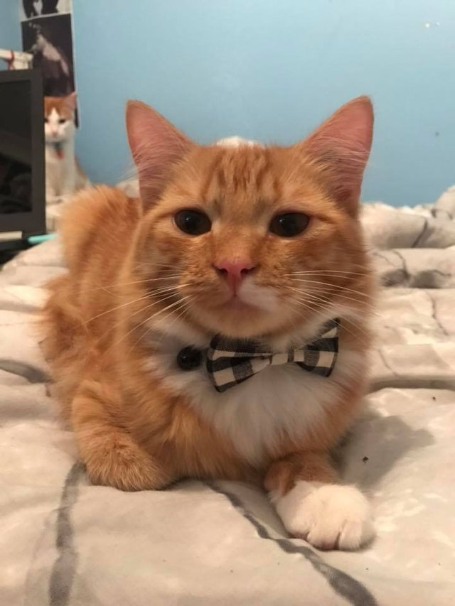

Thttps://www.factswt.com/this-is-thor-hes-a-bengal-cat-with-just-perfect-markings/
This is Elanore. She is a bengal cat breed and is 2 years old. She is very calm and loves to do her own thing. But, She also loves being petted and cuddles when she wants it. She is also friendly with all other types of animals so she will be perfect if you have other animals
https://www.cuteness.com/13712772/21-reasons-why-orange-tabby-cats-are-the-best-tabby-cats
This is Milo. He is a tabby breed and is 18 months old. He is very playful and clumsy. He also loves cuddles and being petted any time of the day. He is a great cat to have as a best friend.
https://petsfeed.co/maine-coon-information-cat-breed-facts/
This is Simon. He is a Maine Coon breed and is 3 years old. He loves to nap as much as he loves to play. He enjoys going outside for walks being on a leash and laying in the grass.

https://facty.com/network/answers/things/what-are-the-characteristics-of-siamese-cats/2/
This is Naveen and Nadia. They are Siamese breed and are twins so they are both a year old. They are inseperable, so if you could we would love if you could adopt both. They both play together and never fight. They take care of each other as well. Naveen is a bit more playful while Nadia would rather just lay on your lap.
If this is your first time owning a dog or you just want to know some more information then you click this link here: How to care for a cat and it will explain how to care for a cat!